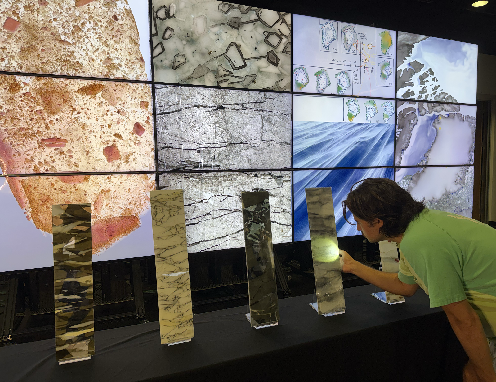

Artwork
Ice Archives
Ice Archives invites viewers into the into the geologic record, buried beneath 1.5 miles of ice, amplifying the signal, exposing where time meets scientific foresight—where the deep memory of ice and sediment intersects with the tools that allow us to glimpse possible futures. The work offers an encounter with climate science not as abstraction, but as material, sensory experience. The highlights three drill sites across the spine of Greenland’s ice sheet, from the thinning, melting margins near the ocean to its two-mile-thick summit some 700 kilometers inland. Scientific methods reveal that this immense body of ice has been far smaller in the past, responding to prolonged warmth over millennia. Ice Archives translates the isotopic records and computational simulations into visual and tactile languages that mediate between scientific models, display systems, and public understanding. In Ice Archives, we have united the physicalizations, illustrations and visualizations through photoreceptors mounted on the back of the cores. Flashlights provided alongside the cores serve a dual purpose; by illuminating sections of core, viewers reveal hidden features in the glass while also activating the screens behind the table, which display scientific findings related to that sample. Ice Archives installed. On the table in front of the screen are three glass columns representing the nine types of ice and sediment most relevant to the scientific discussions presented here. Each glass column is backed by photo sensors that are activated by flashlights held by viewers and communicate with the computer driving the screen content. As viewers explore the glass with a flashlight—mimicking the processes scientists use when examining ice cores—the light reveals a microscopic like circle of imagery, exposing details not visible without illumination. This act of interaction and exploration is central to the work. The progressive discovery of newly revealed details draws viewers into sustained engagement, linking close observation with scientific content. By reflecting aspects of the scientific process, the installation exposes viewers to the exploratory practices, uncertainty, and effort inherent in scientific investigation, as well as to the work undertaken to better understand our planet’s processes, past and future.

Fused glass sculpture, with photo sensors driving the digital content on the core sites and characteristics.